Hexo + github搭建个人博客
最近学习了用Hexo + github搭建个人博客，遇到了一些坑，因此想写下来，防止以后再遇到类似的问题。话不多说，直接开始。
Hexo在本地Server中显示
安装Hexo，前提是需要安装git和Node.js，详情可参考Hexo官方文档：
Hexo安装好以后，下载typora并安装，该软件是一个MarkDown编辑器，可以直接编辑.md文件。
在cmd下，创建新文件夹，并安装图片插件：
1
2
3
4
5> E:\>hexo init my-blog
> E:\>cd my-blog
> E:\my-blog>npm install
> E:\my-blog>npm install https://github.com/CodeFalling/hexo-asset-image -- save
>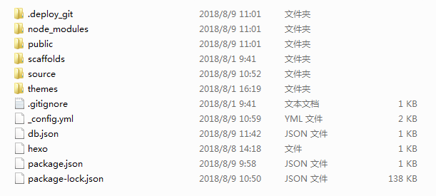
其中，_config.yml是主要配置文件，Hexo官方文档中有详细介绍，本处不再重复。themes文件夹中是博客的主题（默认的为landscape），可以在网上下载，本文使用的为next，在cmd的站点根目录下输入即可下载：
git clone https://github.com/iissnan/hexo-theme-next themes/next
在跟目录的_config.yml中，将theme的值修改为next：
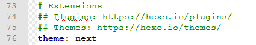
打开theme文件夹，打开next，打开_config.yml（不是my-blog根目录下的那个，next根目录下也有一个该文件），找到Scheme，将scheme设置为Pisces（next有Muse、Mist、Pisces和Gemini四种样式，本文使用的是Pisces）：
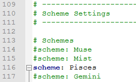
在cmd下进入my-blog（即自己建的文件夹），使用
hexo n 文件名创建新的md文件。进入source文件夹，在_post文件夹中，会生成新建的md文件以及与该md文件相同的文件夹，可以将md文件中用到的图片放入到该文件夹中，这样在部署到github时能正常显示这些图片：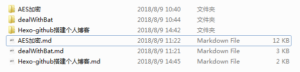
使用typora编辑md文件，使用方法和word类似。这里想说的是插入图片时的问题，如果右键选择插入->图像，这种方法在部署的时候图片会显示不出来（编辑时能显示），该方法如下图所示：
![默认插入图片方式]默认插入图片方式.png)
[]中为该图片在网页中显示的名称，此外，将
Hexo-github搭建个人博客.assets/删除。此时图片在typora中不会显示，但在server或者github中能正常显示。格式如下图：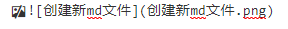
此外，还有一种图片显示方式：
1 | {% asset_img aaa.jpg aaa %} |
但本文在使用这种方式时，有时在server中能正常显示，有时在hexo g时会出现错误，如下图所示：

后将10中的图片显示方式换为9中的方式，再使用hexo g时，就能正常生成了。
生成博客，打开server，在浏览器中输入：
localhost:4000显示：1
2
3E:\my-blog>hexo clean
E:\my-blog>hexo g
E:\my-blog>hexo sserver中显示画面：
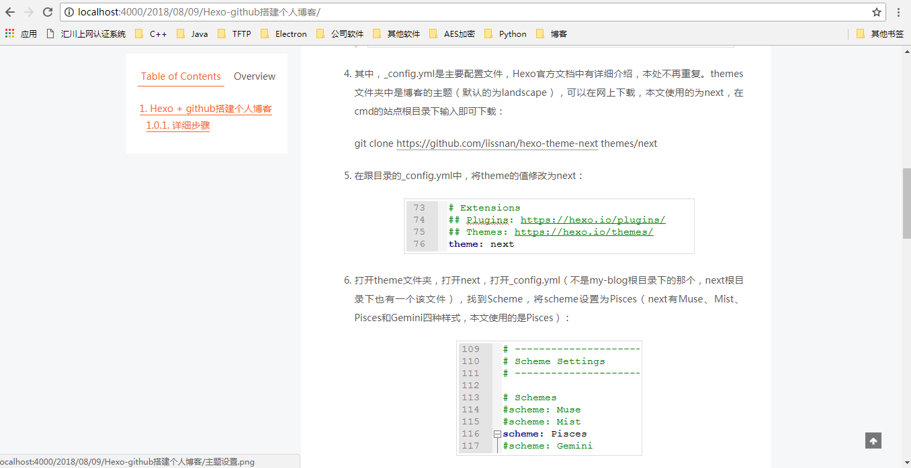
注：在source的_post文件夹中，新生成了后缀名为.assets文件夹，里面保存的是md文件中使用的图片，经过测试，将其删除不影响server中图片的正常显示。
部署到github中
在自己的github账号中，新建一个New repository，名称为：自己github名称.github.io：
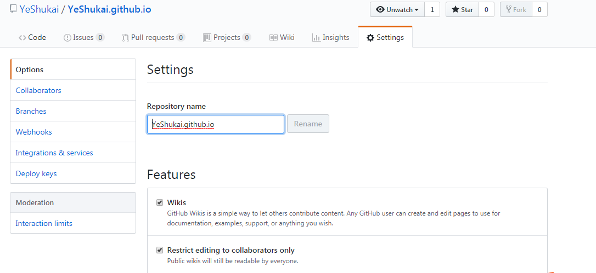
向下拉到GitHub Pages处，设置published地址，theme，域名等。如果有自己域名，可以在Custom domain中设置，这样利用Hexo写的博客就能在自己域名中看到啦。本文使用的是github自带的，如下图所示：
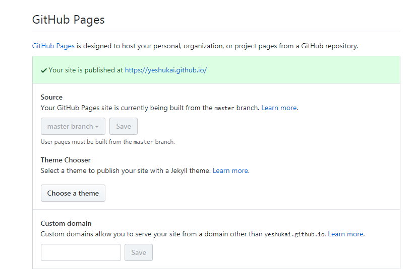
在my-blog根目录中的_config.yml，修改deploy中的repository地址：
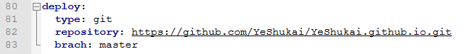
在3中，还有一种修改方式：`git@github.com:YeShukai/YeShukai.github.io.git`，但本文利用该方式部署时没成功。
在cmd的my-blog根目录下，安装一个扩展，然后生成，部署：
1
2
3E:\my-blog>npm install hexo-deployer-git --save
E:\my-blog>hexo g
E:\my-blog>hexo d部署失败，原因是该md文件忘记关闭了。如果关闭后还是部署不成功，先hexo clean，再重复5中的步骤。如果还不成功的话可能就是md文件里面格式有问题。
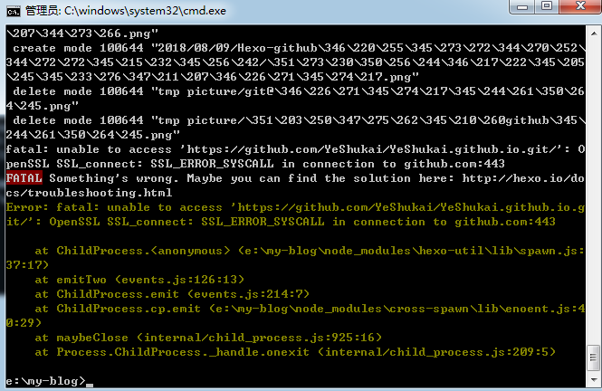
重复5中步骤，部署成功。部署成功期间需要输入github的账号密码：
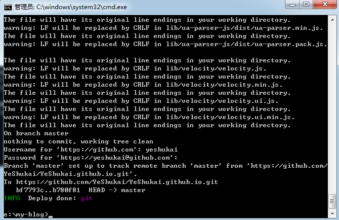
在github的博客中，保存的是html和css等内容，具体如下：
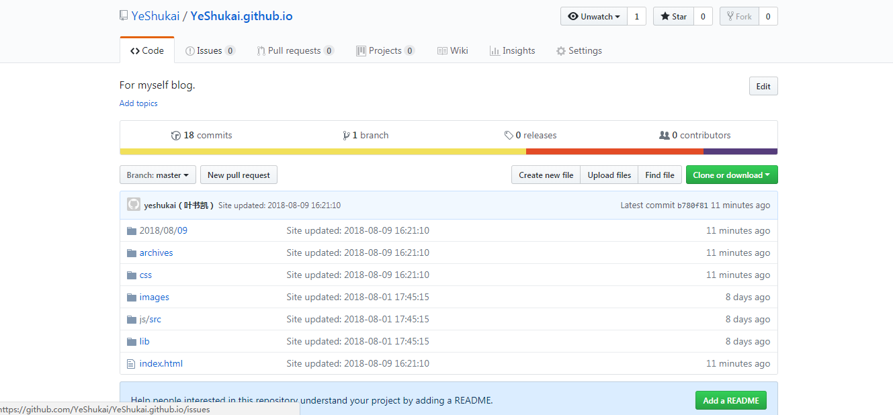
在发布的网址中显示，该过程可能有延时，需要等待几分钟：
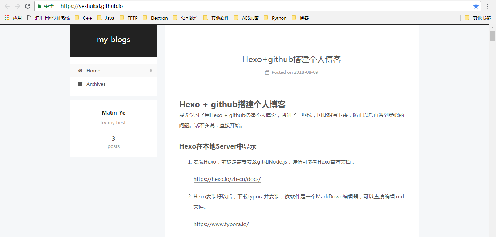
完毕。